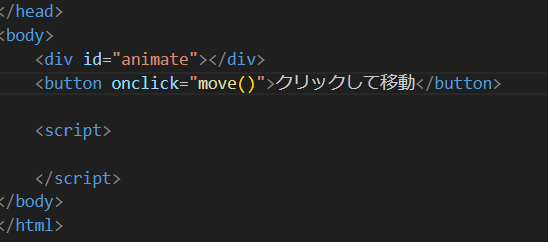
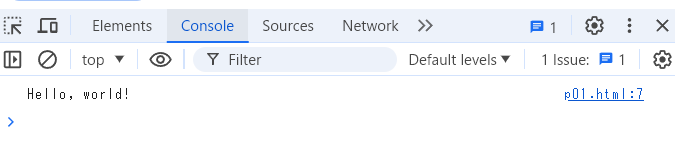

Javascriptでアニメーション効果を実現させる方法
参考サイト：mozila developer network
animate
requestAnimationFrame
参考サイト：mozila developer network
animate
requestAnimationFrame
HTMLにJavascriptを埋め込むためには、scriptタグを使用します。
以下のコードは、開発者ツール（Chromeの場合、F12で開くことが可能） に「Hello, world!」と表示するプログラムです。
function helloWorld() {
console.log("Hello, world!");
}
// 関数を実行
helloWorld();
p01.htmlには上のプログラムが埋め込まれています。開発者ツールから「console」を選ぶと、「Hello, world!」と表示 されていることが分かります。
アニメーションの基本として、赤い四角形を移動させるプログラムを作成します。
function move() {
const elem = document.getElementById("animate");
let pos = 0;
const id = setInterval(frame, 10);
function frame() {
if (pos == 350) {
clearInterval(id);
} else {
pos++;
elem.style.top = pos + "px";
elem.style.left = pos + "px";
}
}
}
p02.htmlを開き、ボタンを押すと赤い四角形が右下へと動きます。
変数const elem は赤い四角形を指します。setInterval関数で10ミリ秒ごとに frame関数を実行します。frame関数内で、posが350になるまで、posを1ずつ増やし、 赤い四角形の位置を変更します。
Javascriptのanimateメソッドを使用すると、CSSアニメーションを簡単に実装できます。
ボタンを押すと、青色のボックスが下に移動します。
function animateBox() {
const box = document.getElementById("box");
box.animate([
{ transform: 'translateY(0px)' },
{ transform: 'translateY(200px)' }
], {
duration: 1000,
iterations: 1,
fill: 'forwards'
});
}
この例では、ページのロード時にヘッダーがフェードインし、ギャラリー内のテキストがホバー時にズームインするアニメーションを実装しています。 animateメソッドを使用して、ヘッダーのフェードイン効果を実現し、CSSのtransitionプロパティを使用して、 ギャラリーアイテムのホバー時のズームイン効果を実現しています。
以下のリンクを開くと、まずタイトルがフェードインします。タイトル下にあるタイルにカーソルを合わせるとズームインすることが確認できます。
以下のコードは、ヘッダーのフェードイン効果を実装するものです。
document.addEventListener('DOMContentLoaded', () => {
const header = document.querySelector('.header');
header.animate([
{ opacity: 0 },
{ opacity: 1 }
], {
duration: 2000,
fill: 'forwards'
});
});
以下のCSSは、ギャラリーアイテムのホバー時のズームイン効果を実装するものです。CSSのtransitionプロパティを利用している部分です。
.gallery-item:hover {
transform: scale(1.1);
}
requestAnimationFrameは、JavaScriptでアニメーションを実行するためのメソッドです。
requestAnimationFrameは、アニメーションを更新するための関数をブラウザに登録し、 次の再描画の前にその関数を呼び出すように指示します。 これにより、アニメーションがスムーズに実行されます。
以下のコードは、ボールを落下させる物理シミュレーションを行うものです。
const ball要素でボールの定義（半径・色・速度など）を定義し、update関数で物理的な動き（重力・摩擦・デフォルトの速度） を与えています。
const canvas = document.getElementById('canvas');
const ctx = canvas.getContext('2d');
const ball = {
x: 100,
y: 100,
vx: 2,
vy: 2,
radius: 20,
color: 'blue',
draw() {
ctx.beginPath();
ctx.arc(this.x, this.y, this.radius, 0, Math.PI * 2);
ctx.fillStyle = this.color;
ctx.fill();
ctx.closePath();
}
};
const gravity = 0.1;
const friction = 0.99;
function update() {
ctx.clearRect(0, 0, canvas.width, canvas.height);
ball.vy += gravity;
ball.vx *= friction;
ball.vy *= friction;
ball.x += ball.vx;
ball.y += ball.vy;
if (ball.x + ball.radius > canvas.width || ball.x - ball.radius < 0) {
ball.vx *= -1;
}
if (ball.y + ball.radius > canvas.height || ball.y - ball.radius < 0) {
ball.vy *= -1;
}
ball.draw();
requestAnimationFrame(update);
}
update();
SVG（Scalable Vector Graphics）はベクター形式のデータで構成されているため、解像度に依存せず、どのデバイスでも美しく表示されます。
以下の赤い円はSVGで描かれています。
このように単純なアニメーションはsvg図形のみで描画できますが、JavaScriptを用いてより複雑なアニメーションを実現することができます。
以下のコードは、SVGで描かれた青い円を左右に移動させるプログラムです。
Three.jsを利用すると、HTML上での3D表現を簡単なコードだけで実現できます。
以下のコードは、緑色の立方体を表示するプログラムです。
const scene = new THREE.Scene();
const camera = new THREE.PerspectiveCamera(75, window.innerWidth / window.innerHeight, 0.1, 1000);
camera.position.z = 5;
const renderer = new THREE.WebGLRenderer();
renderer.setSize(window.innerWidth, window.innerHeight);
document.body.appendChild(renderer.domElement);
const geometry = new THREE.BoxGeometry();
const material = new THREE.MeshBasicMaterial({ color: 0x00ff00 });
const cube = new THREE.Mesh(geometry, material);
scene.add(cube);
function animate() {
requestAnimationFrame(animate);
cube.rotation.x += 0.01;
cube.rotation.y += 0.01;
renderer.render(scene, camera);
}
animate();
Three.jsを使用するためには、Three.jsのライブラリを読み込む必要があります。
Three.jsのライブラリは、以下のCDNを使用することができます。
<script src="https://cdnjs.cloudflare.com/ajax/libs/three.js/r128/three.min.js"></script>
シーンの作成: THREE.Sceneを使ってシーンを作成します。シーンは、3Dオブジェクトやライトを配置するためのコンテナです。
カメラの作成: THREE.PerspectiveCameraを使ってカメラを作成します。カメラは、シーンをどのように表示するかを決定します。
レンダラーの作成: THREE.WebGLRendererを使ってレンダラーを作成します。レンダラーは、シーンとカメラを使って描画を行います。
ジオメトリとマテリアルの作成: THREE.BoxGeometryを使って立方体のジオメトリを作成し、THREE.MeshBasicMaterialを使ってマテリアルを作成します。 これらを組み合わせてメッシュを作成し、シーンに追加します。
アニメーションループ: requestAnimationFrameを使ってアニメーションループを作成します。このループ内でオブジェクトの回転を更新し、シーンをレンダリングします。